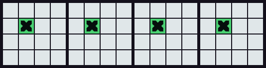
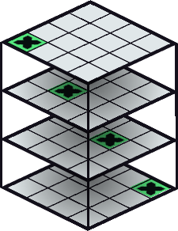
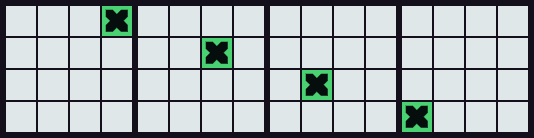
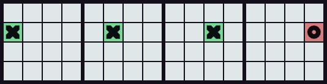
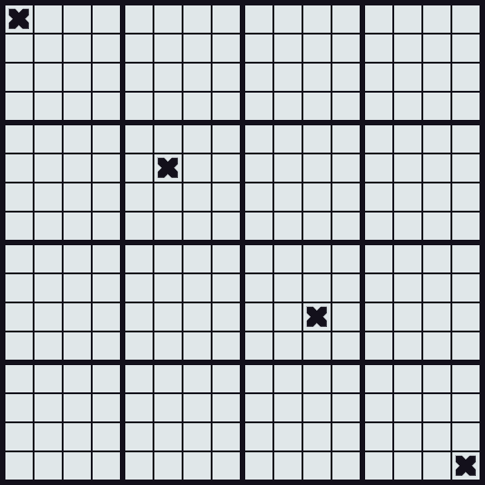
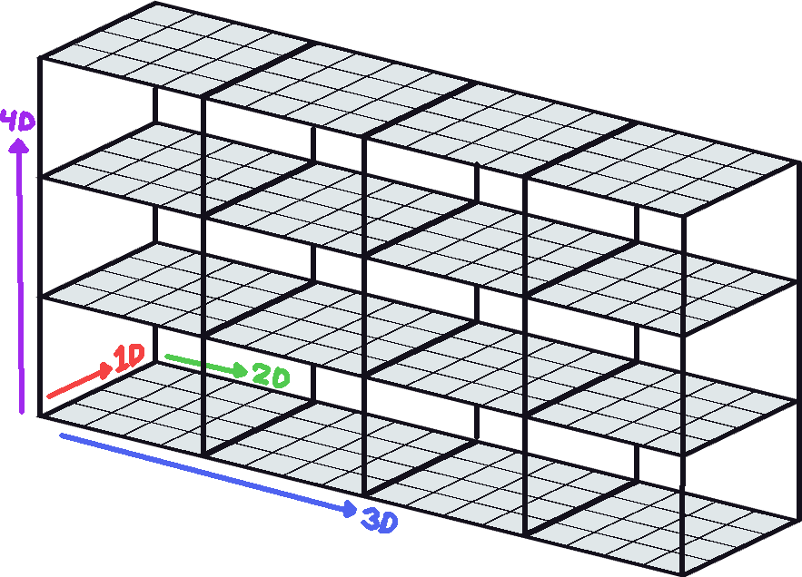
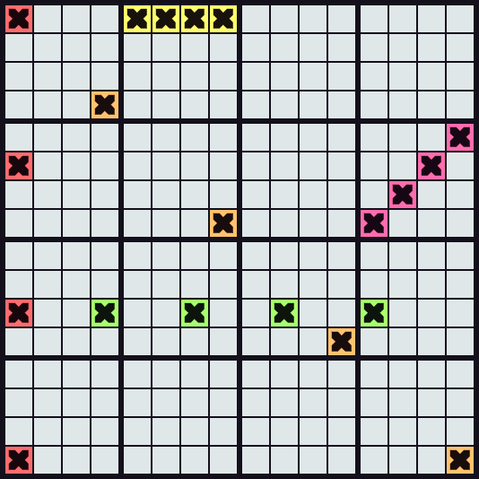
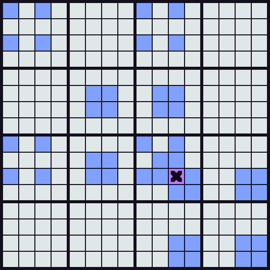
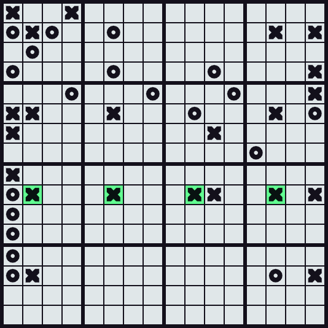

Tic Tac Tesseract is a play on the famous game Tic Tac Toe. Like the original, it is played with two participants. The two players take turns placing a piece in an empty cell, attempting to get 4 of their pieces in a straight line, while preventing the other player from creating such a line, by blocking those cells.
First of all, instead of playing on a 3x3.. board, we play on a 4x4.. board because it would otherwise be too easy to force a win. Unlike normal Tic Tac Toe, this version of the game is played in of 4 dimensions. This means that it is played on a 4x4x4x4 board, creating 256 cells in total. Trying to imagine this can be tough, so it's recommended that you don't try to wrap your head around the geometry, but rather just get used to the rules of the game.
For simplicity, let's start with a 3D board, you can probably imagine how a 3D game would work, 4 of the same pieces placed above eachother would make you win. Here's an example:
A straight line that goes directly up through a 3D board
You can see 4 crosses that are positioned directly below eachother, one per level, meaning victory for player X. We can also represent this as four 4x4 fields next to eachother like below. Think of them like floors of a building, each field represents a floor of our 4x4 board. If every floor contains your piece piece in the same spot, you win!
The same board represented as floors
Hopefully that made sense. Now if you've played Tic Tac Toe before, you know that you can also make diagonal lines to win, here's an example:
A straight line that goes diagonally up through a 3D board
The same board represented as floors
Here's another example, where player O blocked player X from winning:
A line blocked by player O
Now that we have essentially expanded into another dimension and flattened it out, we can repeat this process to expand into the 4th dimension. Imagine the bottom row of the following board is what we already established, and all rows above it are floors on top of that board:
A line going diagonal in all directions
Here's what that would look like if you were to stack those floors on top of eachother, we have finally reached our 4D board.
A 4D board represented as 4 3D boards
Here's some of the straight lines you could make on this board to win:
Examples of valid lines
To make the game a bit easier to follow, the lines that the cell you're hovering could be part of are highlighted in blue like below. You can turn this off by clicking on Disable Highlights below the board for an extra challenge. Alternatively you can add '?hard' to the end of the url.
Highlights of lines that the hovered cell could form lines with
That's it! It's a confusing game for sure, especially at the start. But as you get used to the rules, it becomes way more intutitive. To finish off, here's an example of a real game where player X won:
An example of a real game - player X won here
Have fun playing!
Back to game